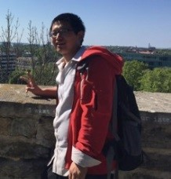

Workshop主席 李国良(清华大学)，王宏志(哈尔滨工业大学)
时间：2017年10月20日 下午14:00-17:30
地址：浙大玉泉校区永谦活动中心主会场
14:00-14:10 开场白
14:10-15:10 胡卉芪，华东师范大学
报告题目：分布式数据库并行查询调度问题的实践与研究
报告摘要：随着数据数量、用户规模、应用复杂度的升级，分布式并行处理技术已逐步成为新型数据库系统查询处理必须依赖的关键技术。Greenplum, PG-XL-9.5等数据库都很大程度上支持了所谓的分布式大规模并行处理 (MPP) 架构。 在查询并行处理的具体实现层面，查询的并行(资源)调度是难以回避的关键问题。 从并行方式而言，基于迭代器处理的查询并行处理可以包括数据水平并行、流水线并行、流水线间并行， 涉及磁盘I/O、CPU计算、网络传输等多种计算机资源。理论证明基于他们分配资源并调度以获得最优的查询时间是NP的。我们将通过实践与研究，介绍并行查询调度的相关方法， 使得其能最大或者较大化地提高资源的利用率。 演讲的内容同时涉及细粒度的算子运算(e.g. hash join)中资源的分配方法以及整个查询执行计划级别的资源分配策略。
15:10-16:10 Wen Hua，the University of Queensland
报告题目：Populating Knowledge Bases with Temporal Information
报告摘要：With the technological advancements in information extraction (IE), large-scale machine understandable knowledge bases (KBs) have been constructed, which are crucial for semantic understanding, question answering, and other advanced tasks. Knowledge, however, is time variant in practice and most relations are only valid for a certain period of time. This phenomenon highlights the necessity to complement existing KBs with temporal information (TKB) especially via an automatic approach. In this talk we will introduce this emerging research area, with an emphasis on the challenges and some promising techniques that can be applied.
16:10- 17:10 邵蓥侠，北京大学
报告题目：基于样例的知识图谱查询
报告摘要：知识图谱作为一种重要的知识表示形式已被各类智能应用广泛使用。随之也涌现了许多开放的知识图谱，例如Yago, Freebase, DBPedia等。这些知识图谱一般采用RDF格式，并使用结构化查询语言SPARQL进行访问。然而，普通用户利用SPARQL查询知识图谱是一件十分困难的事。首先，书写SPARQL语句需要了解RDF数据集的元数据，但RDF是一种无schema的数据格式，再加上知识图谱的规模大，大大增加了熟悉元数据的难度；其次，SPARQL语法复杂。因此，提升RDF表示的知识图谱的可用性一直是重点的研究问题。本次报告，将介绍一种基于样例的知识图谱查询范式。此范式的假设是用于在查询一个知识图谱时，其内心已经有部分样例，但由于SPARQL查询的复杂性，使其无法写出一个正确的查询。基于样例的知识图谱查询则是根据用户输入的部分样例，推测真正的查询意图，并生成合理的SPARQL查询，获取知识图谱中所有与样例相似的结果。具体内容包括实体间相似度及相关性衡量技术、SPARQL查询生成技术和交互式迭代优化技术等。
讲者介绍：
胡卉芪，华东师范大学数据科学与工程学院，助理研究员。于2016年毕业于清华大学计算机科学与技术系数据库实验室，获计算机方向博士学位。主要专注于数据库领域研究，已在 ICDE, TKDE、VLDB 等重要国际数据库会议与期刊上发表多篇研究内容。2016以人才引进方式加盟华师大数据科学与工程学院。 他的主要研究方向包括数据库系统理论与实现，数据库查询优化技术，时空数据存储管理等，主要应用趋向华师大课题组自主研发的数据库系统CLAIMS与Cedar，部分相关研究已在银行、移动等行业得到了实际应用。
Wen Hua, is a Lecturer at the School of Information Technology and Electrical Engineering (ITEE), the University of Queensland. She received her PhD and bachelor degrees in Computer Science from Renmin University of China in 2015 and 2010, respectively. After completing her PhD study, she was appointed as a Postdoctoral Research Fellow at the University of Queensland. Her research interests include information extraction, natural language processing, social media analysis, and sensor data management. She has published several papers as the main author in reputed journals and international conferences such as SIGMOD, PVLDB, ICDE, TKDE, IJCAI, CIKM, WSDM, WWWJ, etc. She won the Best Paper Award in ICDE 2015, and she was also awarded the Advance Queensland Research Fellowship in 2017.
邵蓥侠，北京大学信息科学技术学院博⼠后，近年来致⼒于⼤规模图计算系统、并⾏图算法优化以及图挖 掘算法等的研究⼯作，并在数据库相关领域的顶级国际学术会议（SIGMOD，VLDB）与国际顶级期刊IEEE TKDE 上共发表了10 篇学术论⽂(4 x SIGMOD，3 x VLDB，3 x IEEE TKDE)，包括第⼀作者⾝份的5篇⽂章。累计在数据库领域重要的国际学术会议和国际学术期刊发表并录⽤了15 篇论⽂。邵蓥侠博⼠曾获得国家教育部颁发的博⼠奖学⾦、Google博⼠奖学⾦（2014）、微软学者称号（2014）、⾼通奖学⾦（2015），并应邀担任过数据库顶级会议SIGMOD的外部评委。曾担任过APWeb-WAIM（2017）和icSoftComp（2017）的程序委员, VLDBJ的论文评委。同时，他也是明略软件系统有限公司SCOPA产品部技术顾问，指导知识工程相关工作。